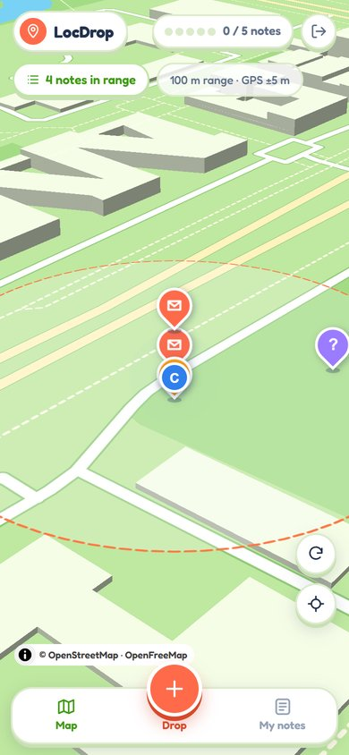

LocDrop
Leave a note where you stand. Only people who come close can read it.
Drop a short note at your location. Anyone within 100 m sees a pin on their map, and the server checks they're really there before the note opens.
Open the demo- Open it on your phone and create an account (username and password only, no email).
- Allow location. The live map centres on you with your 100 m range.
- Tap + Drop to leave a note. Best with a friend nearby, who will see your pin appear and can open it.
